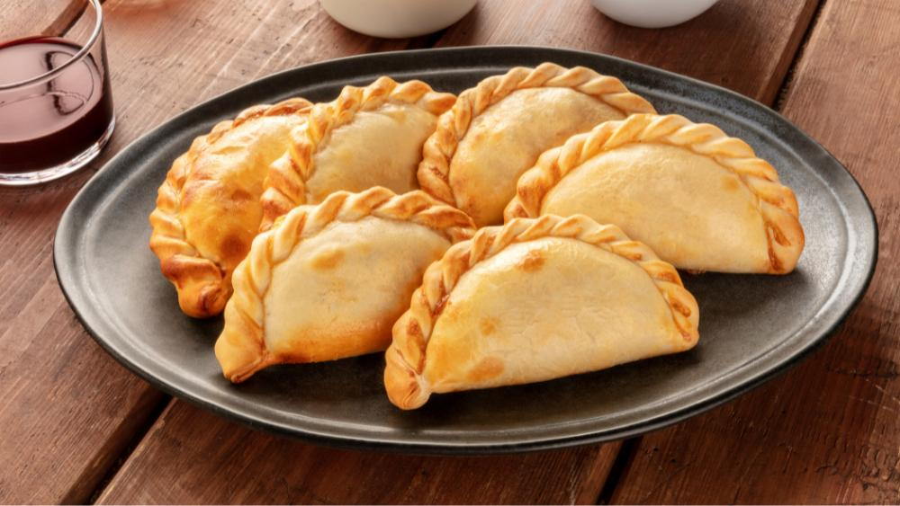
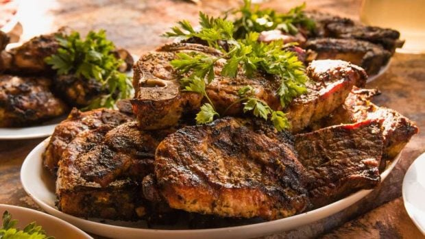

Empanadas
Las empanadas son una especie de pastel relleno con carne, pollo, queso o vegetales, muy populares en Argentina. Se pueden hornear o freír.
Asado
El asado es una tradición argentina que consiste en carne asada a la parrilla. Es un plato social y festivo, muy apreciado en reuniones familiares y amigos.
Provoleta

La provoleta es un plato típico argentino que consiste en queso provolone a la parrilla, acompañado de condimentos y a menudo servido con pan.